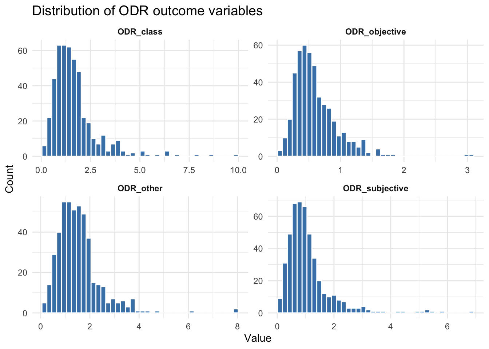
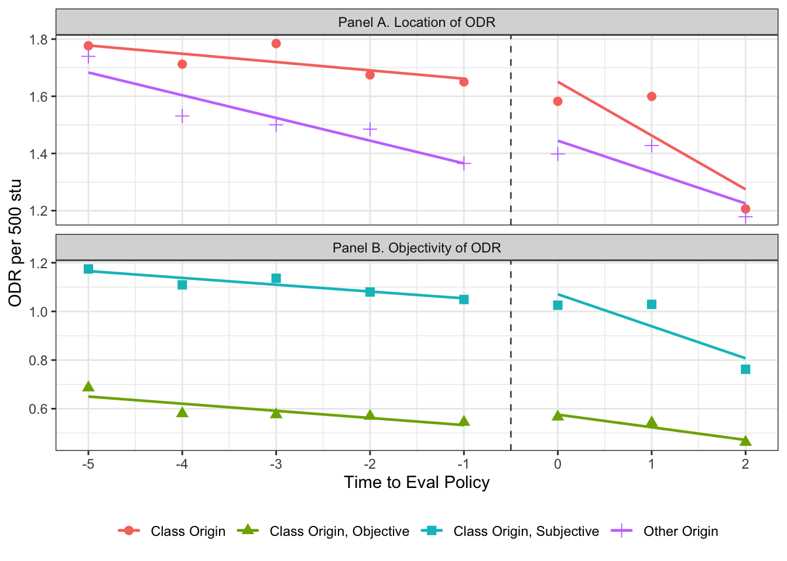

# Load package
library(pacman)
p_load(here, tidyverse, lme4, haven, fixest)edld_650_dare_01
EDLD 650 Advanced Seminar in Educational Research Methods
Professor: David D. Liebowitz
Apr 15, 2026
Data Analysis and Replication Exercise (DARE) 01
Introduction
You will replicate and extend analysis from Liebowitz, Porter and Bragg. In the file EDLD 650 DARE 1.csv, you will find the variables listed in Table 1. These data have been aggregated to the state level and altered to preserve confidentiality; thus your results will differ (slightly) from those in the paper. Please make sure that your graph axes are labeled, the variables in your tables have comprehensible labels, and your table notes are complete.
# Load the data
df <- read_csv(here("data/EDLD_650_DARE_1.csv")) Rows: 516 Columns: 19
── Column specification ────────────────────────────────────────────────────────
Delimiter: ","
chr (1): state_abbrev
dbl (18): school_year, state_id, eval_year, class_remove_year, suspension_ye...
ℹ Use `spec()` to retrieve the full column specification for this data.
ℹ Specify the column types or set `show_col_types = FALSE` to quiet this message.# str(df)A. Data Management Tasks
A1. Convert the raw counts of enrollment by race/ethnicity into percent- ages (i.e., divide the enrollment count for each ethno-racial category by total enrollment). For programming efficiency, can you use a function to do this task?
df <- df %>%
mutate(enroll_other_percent = enroll_OTHER/enroll,
enroll_AM_percent = enroll_AM/enroll,
enroll_ASIAN_percent = enroll_ASIAN/enroll,
enroll_HISP_percent = enroll_HISP/enroll,
enroll_BLACK_percent = enroll_BLACK/enroll,
enroll_WHITE_percent = enroll_WHITE/enroll)
summary(df$enroll_AM_percent) Min. 1st Qu. Median Mean 3rd Qu. Max. NA's
0.000000 0.003189 0.005504 0.031194 0.012070 0.868996 46 A2. Generate dichotomous policy predictor variables that take the value of 1 in state-year observations in which the policy is in place. Call them eval, class_remove and suspension. They should take the value of 0 in years during which these policies were not in place. Also, generate a running time variable (run_time) that reflects how far or close the state-year observation is from the implementation of higher- stakes teacher evaluation and a variable that permits the effects of the evaluation policy to vary (linearly) over time (evalXyear). How will you deal with states that never implement evaluation? Do that too.
df <- df %>%
mutate(
eval = case_when(!is.na(eval_year) & school_year >= eval_year ~ 1, TRUE ~ 0),
class_remove = case_when(!is.na(class_remove_year) & school_year >= class_remove_year ~ 1,
TRUE ~ 0),
suspension = case_when(!is.na(suspension_year) & school_year >= suspension_year ~ 1,
TRUE ~ 0),
run_time = case_when(is.na(eval_year) ~ 0,
TRUE ~ as.numeric(school_year - eval_year)),
evalXyear = eval*run_time
)B. Understanding the Data and Descriptive Statistics
B1. Inspect your data. What sorts of missingness exist within the data file? What sorts of missingness should concern you? Which do not? In this assignment, please restrict your sample to state-years with non- missing outcomes.
Answer: Per our inspection, each row is a state-year observation nested in state clustering unit. We are less concerned with the missingness existed in the eval_year, class_remove_year, and suspension_year because we have converted them to dichotomous by generating policy predictor variables at the previous step. 46 missing observations exist within the ODR outcomes and enrollment demographics respectively.
colSums(is.na(df)) school_year state_id state_abbrev
0 0 0
eval_year class_remove_year suspension_year
72 408 288
PBIS enroll FRPL_percent
175 46 46
enroll_OTHER enroll_AM enroll_ASIAN
46 46 46
enroll_HISP enroll_BLACK enroll_WHITE
46 46 46
ODR_class ODR_other ODR_subjective
46 46 46
ODR_objective enroll_other_percent enroll_AM_percent
46 46 46
enroll_ASIAN_percent enroll_HISP_percent enroll_BLACK_percent
46 46 46
enroll_WHITE_percent eval class_remove
46 0 0
suspension run_time evalXyear
0 0 0 # Are there missing values of ORD_class?
sum(is.na(df$ODR_class))[1] 46# 46
# Are there missing values of ORD_other?
sum(is.na(df$ODR_other))[1] 46# 46
# Are there missing values of ORD_subjective?
sum(is.na(df$ODR_objective))[1] 46# 46
# Are there missing values of ORD_objective?
sum(is.na(df$ODR_objective))[1] 46# 46B2. Graphically display the distribution of the outcome data. What do you notice about the distribution of outcomes? Are there any actions,transformations or sensitivity tests you would like to conduct based on this evidence?
Answer: The outcomes are highly right-skewed, with most values near zero. we would use a two-way fixed-effects Difference-in-Differences (DiD) model to estimate changes within units over time while controlling for unit and time effects, and would check if results are not due to the outcome’s skewness.
library(ggplot2)
library(tidyr)
library(dplyr)
# Reshape all four ODR outcomes to long format for faceted plotting
df_long <- df %>%
select(ODR_class, ODR_other, ODR_objective, ODR_subjective) %>%
pivot_longer(
cols = everything(),
names_to = "outcome",
values_to = "value"
)
# Standardized the scale of x-axis
max_val <- max(df[c("ODR_class", "ODR_other", "ODR_subjective", "ODR_objective")], na.rm = TRUE)
# Plot all four distributions side by side
ggplot(df_long, aes(x = value)) +
geom_histogram(bins = 40, fill = "steelblue", color = "white", na.rm = TRUE) +
xlim(0, max_val) +
facet_wrap(~ outcome, scales = "free", ncol = 2) +
labs(
title = "Distribution of ODR outcome variables",
x = "Value",
y = "Count"
) +
theme_minimal() +
theme(
strip.text = element_text(face = "bold"),
plot.title = element_text(size = 14)
)
B3. Answer
Our analytic sample would consists of all state‑year observations in the dataset with non‑missing enrollment and FRPL data, and the inferences apply to the population of public‑school students in the states and years represented in that sample.
library(tidyverse)
library(here)
library(flextable)
Attaching package: 'flextable'The following object is masked from 'package:purrr':
composelibrary(officer)
# ---- 1. Analytic sample -----------------------------------------------------
df <- read_csv(here("data/EDLD_650_DARE_1.csv")) |>
filter(!is.na(enroll), !is.na(FRPL_percent)) |>
mutate(
pct_AM = enroll_AM / enroll,
pct_ASIAN = enroll_ASIAN / enroll,
pct_BLACK = enroll_BLACK / enroll,
pct_HISP = enroll_HISP / enroll,
pct_WHITE = enroll_WHITE / enroll
)Rows: 516 Columns: 19── Column specification ────────────────────────────────────────────────────────
Delimiter: ","
chr (1): state_abbrev
dbl (18): school_year, state_id, eval_year, class_remove_year, suspension_ye...
ℹ Use `spec()` to retrieve the full column specification for this data.
ℹ Specify the column types or set `show_col_types = FALSE` to quiet this message.# ---- 2. Enrollment-weighted yearly averages ---------------------------------
wt_vars <- c(
"FRPL_percent",
"pct_AM", "pct_ASIAN", "pct_BLACK", "pct_HISP", "pct_WHITE",
"PBIS",
"ODR_class", "ODR_other", "ODR_subjective", "ODR_objective"
)
year_avgs <- df |>
group_by(school_year) |>
summarise(
enroll_total = sum(enroll),
across(
all_of(wt_vars),
~ sum(.x * enroll, na.rm = TRUE) / sum(enroll[!is.na(.x)], na.rm = TRUE)
),
.groups = "drop"
)
# ---- 3. Mean & SD across yearly weighted averages ---------------------------
stats <- year_avgs |>
summarise(
across(all_of(wt_vars), list(mean = mean, sd = sd), na.rm = TRUE)
)
# ---- 4. Formatting helper ---------------------------------------------------
fmt <- function(x, digits) {
formatC(round(x, digits), format = "f", digits = digits, big.mark = ",")
}
# ---- 5. Assemble table ------------------------------------------------------
tbl <- tibble(
Characteristic = c(
"Enrollment",
" Mean state-year enrollment",
" Mean year enrollment",
"School characteristics",
" % Low-income (FRPL)",
" % Am. Indian/Alask. Native",
" % Asian/PI",
" % Black",
" % Hispanic",
" % White",
" % PBIS successfully implemented",
"Grade-level ODR outcomes (per 500 students, per day)",
" Classroom ODR rate",
" Other location ODR rate",
" Subjective-Classroom ODR rate",
" Objective-Classroom ODR rate"
),
Mean = c(
NA,
fmt(mean(df$enroll), 0), fmt(mean(year_avgs$enroll_total), 0),
NA,
fmt(stats$FRPL_percent_mean, 2), fmt(stats$pct_AM_mean, 2),
fmt(stats$pct_ASIAN_mean, 2), fmt(stats$pct_BLACK_mean, 2),
fmt(stats$pct_HISP_mean, 2), fmt(stats$pct_WHITE_mean, 2),
fmt(stats$PBIS_mean, 2),
NA,
fmt(stats$ODR_class_mean, 2), fmt(stats$ODR_other_mean, 2),
fmt(stats$ODR_subjective_mean, 2), fmt(stats$ODR_objective_mean, 2)
),
SD = c(
NA,
fmt(sd(df$enroll), 0), fmt(sd(year_avgs$enroll_total), 0),
NA,
fmt(stats$FRPL_percent_sd, 2), fmt(stats$pct_AM_sd, 2),
fmt(stats$pct_ASIAN_sd, 2), fmt(stats$pct_BLACK_sd, 2),
fmt(stats$pct_HISP_sd, 2), fmt(stats$pct_WHITE_sd, 2),
fmt(stats$PBIS_sd, 2),
NA,
fmt(stats$ODR_class_sd, 2), fmt(stats$ODR_other_sd, 2),
fmt(stats$ODR_subjective_sd, 2), fmt(stats$ODR_objective_sd, 2)
)
)
header_rows <- which(is.na(tbl$Mean))
# ---- 6. Build flextable -----------------------------------------------------
caption <- paste0(
"Full Sample (N = ", nrow(df), " state-year observations; ",
n_distinct(df$state_abbrev), " states; ",
min(df$school_year), "–", max(df$school_year), ")"
)
ft <- flextable(tbl) |>
set_header_labels(Characteristic = "Characteristic", Mean = "Mean", SD = "SD") |>
add_header_row(values = c(caption, "", ""), colwidths = c(1, 1, 1)) |>
bold(i = header_rows, part = "body") |>
bg(i = header_rows, bg = "#F2F2F2", part = "body") |>
hline(
i = header_rows[header_rows > 1] - 1,
border = fp_border_default(width = 0.5),
part = "body"
) |>
align(j = 2:3, align = "center", part = "all") |>
align(j = 1, align = "left", part = "all") |>
width(j = 1, width = 3.4) |>
width(j = 2:3, width = 0.9) |>
font(fontname = "Times New Roman", part = "all") |>
fontsize(size = 11, part = "all") |>
bold(part = "header") |>
theme_booktabs()
# ---- 7. Save and display ----------------------------------------------------
save_as_docx(ft, path = "dare1_table1.docx")
ftFull Sample (N = 470 state-year observations; 43 states; 2006–2017) | ||
|---|---|---|
Characteristic | Mean | SD |
Enrollment | ||
Mean state-year enrollment | 21,897 | 32,426 |
Mean year enrollment | 857,649 | 260,800 |
School characteristics | ||
% Low-income (FRPL) | 0.54 | 0.05 |
% Am. Indian/Alask. Native | 0.01 | 0.00 |
% Asian/PI | 0.05 | 0.01 |
% Black | 0.14 | 0.02 |
% Hispanic | 0.18 | 0.05 |
% White | 0.55 | 0.02 |
% PBIS successfully implemented | 0.77 | 0.18 |
Grade-level ODR outcomes (per 500 students, per day) | ||
Classroom ODR rate | 1.40 | 0.15 |
Other location ODR rate | 1.34 | 0.13 |
Subjective-Classroom ODR rate | 0.88 | 0.11 |
Objective-Classroom ODR rate | 0.54 | 0.06 |
B4. Answer
We notice that there is a downward secular trend in Average Office Disciplinary Referral rates prior to the policy implementation. This suggests that the ODRs rates were already declining. We would like to conduct event study based on this evidence, which will help us to check the parallel trends assumption. When using event study, it will help to convert binary variable into dummy variables. we stress plotting these raw averages only for states that implemented evaluation reform because we need to look at the patterns of ODR trends when the policy enacts. We need to identify whether there is a sudden jump displays in the trends.
odr_rates <- df %>%
mutate(
eval = case_when(!is.na(eval_year) & school_year >= eval_year ~ 1, TRUE ~ 0),
class_remove = case_when(!is.na(class_remove_year) & school_year >= class_remove_year ~ 1,
TRUE ~ 0),
suspension = case_when(!is.na(suspension_year) & school_year >= suspension_year ~ 1,
TRUE ~ 0),
run_time = as.numeric(school_year - eval_year),
evalXyear = eval*run_time
)
odr_rates <- odr_rates %>%
filter(!is.na(eval_year)) %>%
filter(run_time >= -5 & run_time <= 2) %>%
group_by(run_time) %>%
summarise(
class = mean(ODR_class, na.rm = TRUE),
other = mean(ODR_other, na.rm = TRUE),
subjective = mean(ODR_subjective, na.rm = TRUE),
objective = mean(ODR_objective, na.rm = TRUE),
.groups = "drop"
) %>%
pivot_longer(cols = -run_time, names_to = "measure", values_to = "rate") %>%
mutate(
panel = case_when(
measure %in% c("class","other") ~ "Panel A. Location of ODR",
measure %in% c("subjective", "objective") ~ "Panel B. Objectivity of ODR"
),
measure = case_when(
measure == "class" ~ "Class Origin",
measure == "other" ~ "Other Origin",
measure == "subjective" ~ "Class Origin, Subjective",
measure == "objective" ~ "Class Origin, Objective"
)
)
# Panel Plot #
plot_1 <- odr_rates %>%
ggplot(aes(x = run_time, y = rate, colour = measure, shape = measure)) +
geom_point(size = 2.5) +
geom_smooth(data = filter(odr_rates, run_time < 0),
method = "lm", se = FALSE, size = 0.8) +
geom_smooth(data = filter(odr_rates, run_time >= 0),
method = "lm", se = FALSE, size = 0.8) +
geom_vline(xintercept = -0.5, linetype = "dashed", color = "grey35") +
facet_wrap(~panel, ncol = 1, scales = "free_y") +
scale_x_continuous(breaks = -5:2) +
theme_bw()+
theme(
legend.position = "bottom"
) +
labs(
x = "Time to Eval Policy",
y = "ODR per 500 stu",
color = NULL, shape = NULL
)
plot_1`geom_smooth()` using formula = 'y ~ x'
`geom_smooth()` using formula = 'y ~ x'